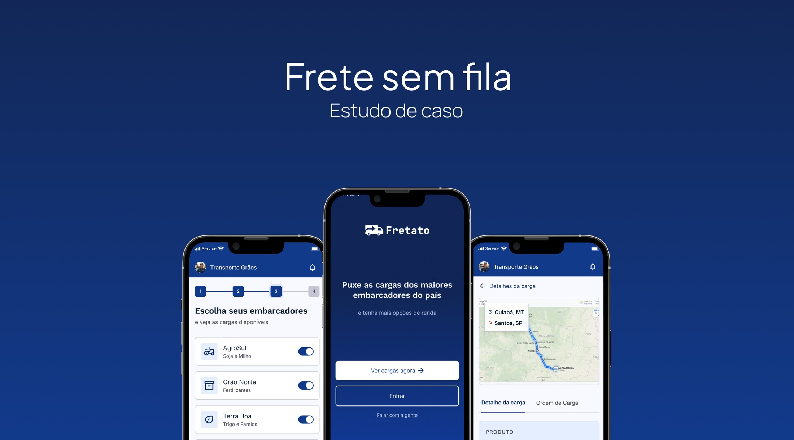
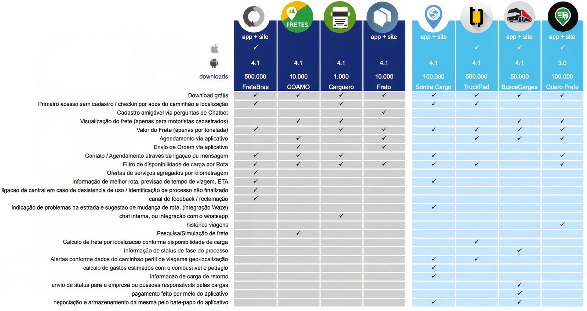
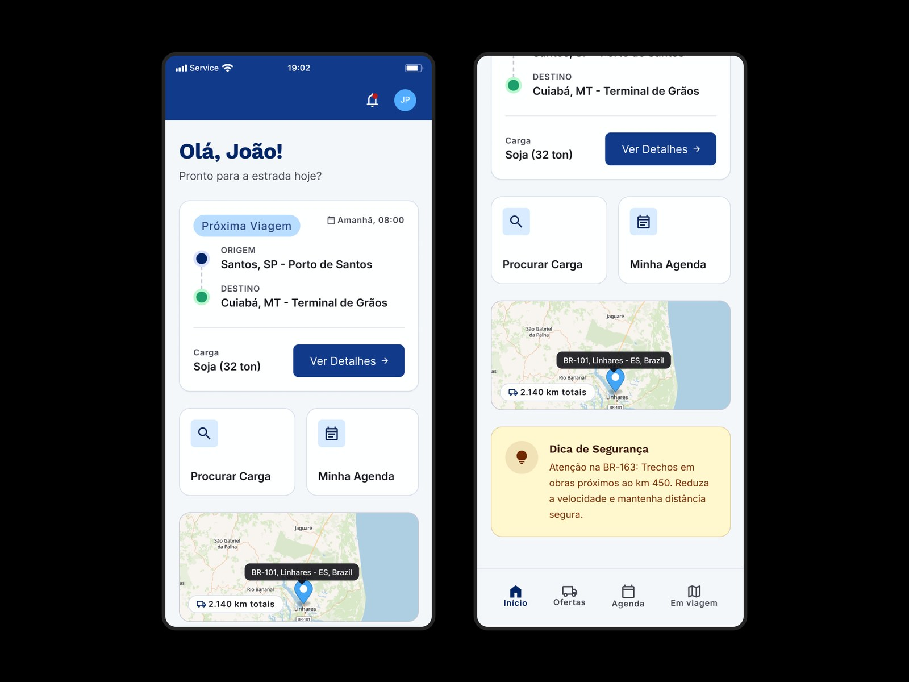
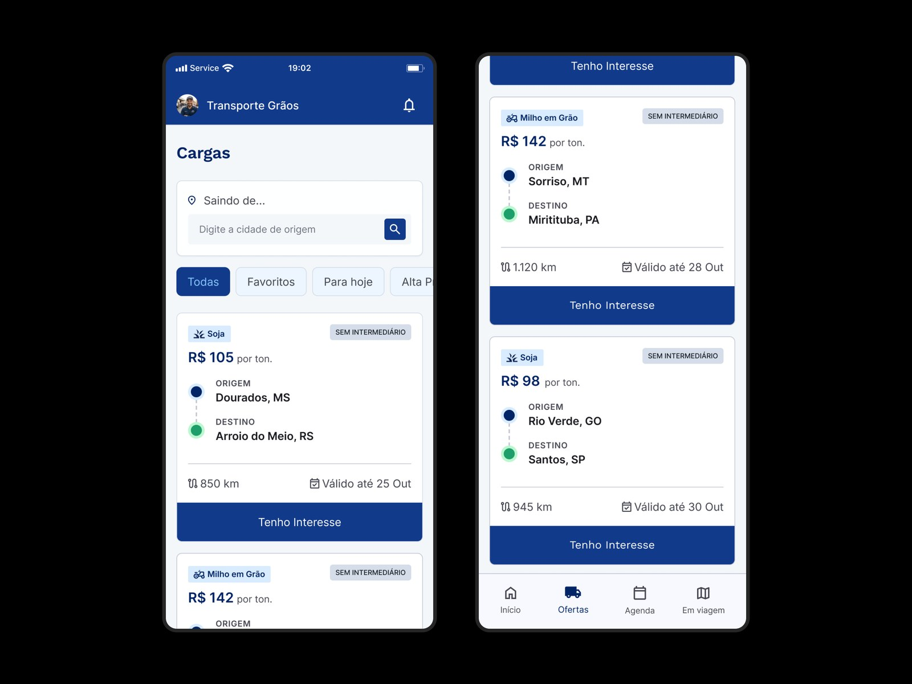
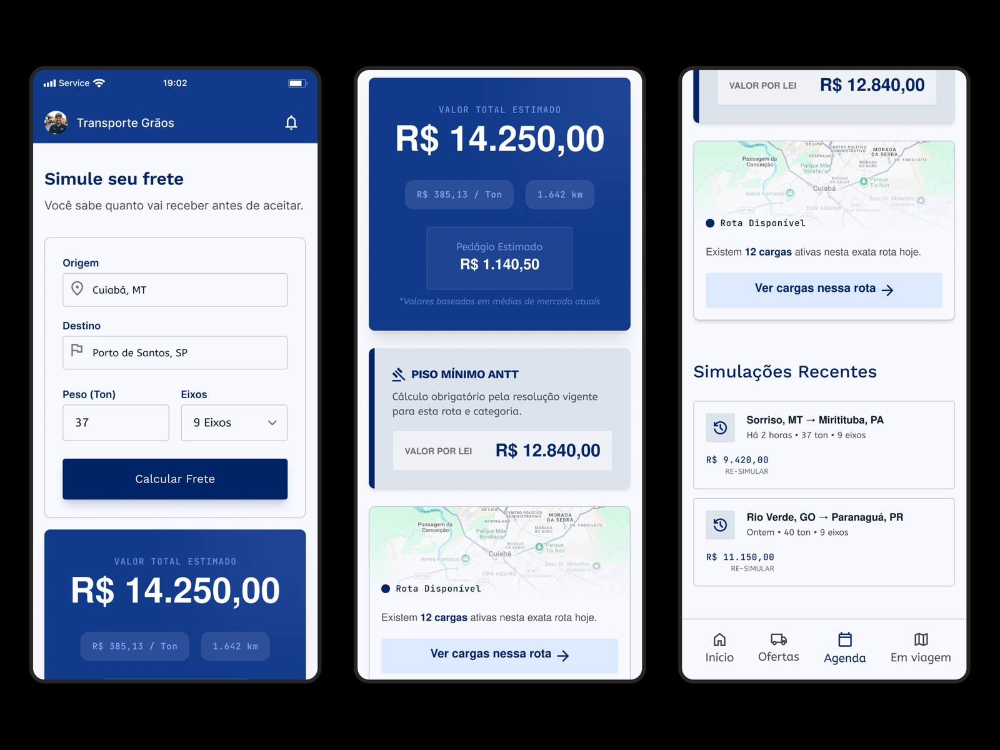
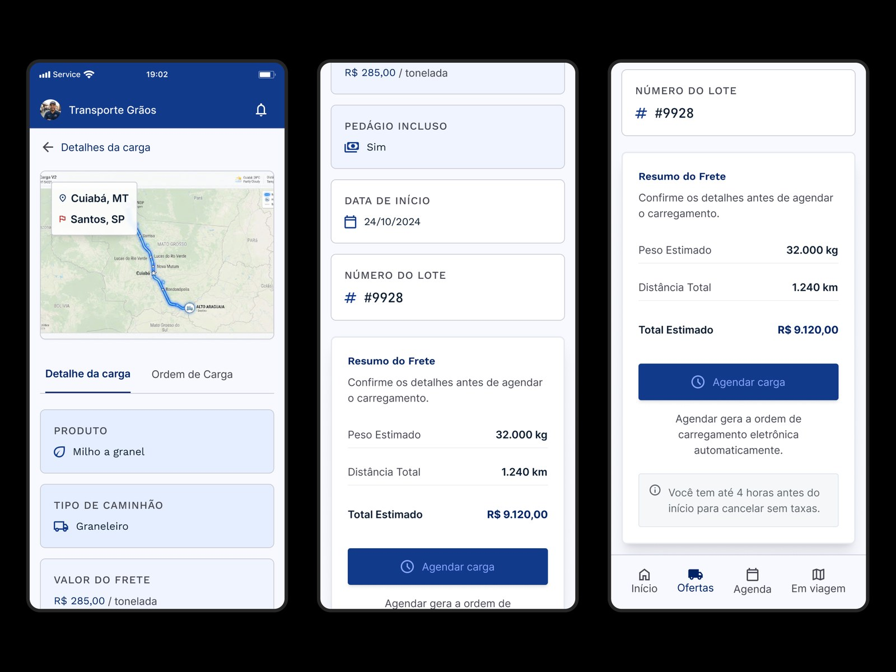
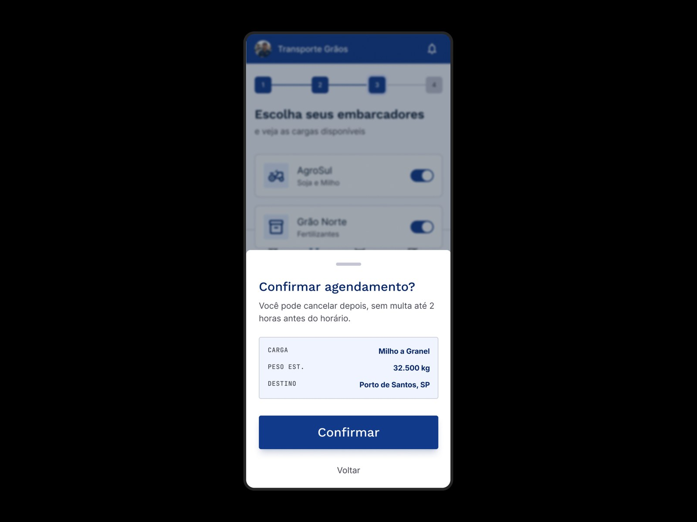

O WhatsApp já era o sistema operacional do frete
90% usavam smartphone, mas a carga circulava por grupos, não por apps. Competir com isso exigia falar a mesma língua, não substituí-la.
App que conecta caminhoneiros às melhores cargas em tempo real e reorganiza a fila nas fábricas, reduzindo em 65% o tempo de espera por novos fretes.

Uma das maiores exportadoras de grãos do país enfrentava um gargalo caro na ponta logística: caminhoneiros perdiam dias em fila para carregar e descarregar milho e soja nas fábricas, e a emissão das ordens de carregamento vivia congestionada.
Do outro lado, o motorista autônomo ficava com o pior dos dois mundos: as melhores cargas eram capturadas por intermediários em grupos de WhatsApp, e sobravam a ele os fretes ruins, quando sobravam.
O pedido era direto: reduzir o tempo perdido na fila por novos fretes e dar aos caminhoneiros acesso às melhores cargas. Entrei como Product Designer atuando de ponta a ponta, da pesquisa inicial à entrega do MVP.
Entrevistei e observei caminhoneiros em três regiões com perfis opostos, de motoristas mais velhos, com baixa escolaridade e desconfiados de tecnologia, a autônomos jovens e fluentes em apps. Rodei um benchmark de 8 aplicativos de frete, construí 4 personas, mapeei a jornada de ponta a ponta e posicionei o produto contra os concorrentes.
90% usavam smartphone, mas a carga circulava por grupos, não por apps. Competir com isso exigia falar a mesma língua, não substituí-la.
O motorista tinha medo de apertar botões e confirmar operações sem enxergar a consequência da ação.
Nos concorrentes, dava para agendar, mas a carga raramente era liberada depois, o que virava frustração e abandono.
Ninguém mostrava o valor final do frete nem o piso mínimo da ANTT antes do aceite.
Grupos e cooperativas capturavam as melhores cargas, penalizando quem operava sozinho.

Cada ação confirmável mostra a consequência e permite cancelar sem punição. Foi o que destravou a desconfiança.
Ícones e padrões que ele já reconhece (WhatsApp, placas de estrada), textos curtos e diretos, poucas telas por tarefa.
Simulação com valor final e km da origem ao destino, e o piso da ANTT sempre visível.
O agendamento passa a efetivamente liberar a carga e gerar a ordem, acabando com a promessa vazia.
Ver cargas e simular frete sem cadastro obrigatório, reduzindo a barreira de entrada.
As decisões da pesquisa viraram quatro capacidades centrais.

Ao abrir o app, o motorista já vê a próxima viagem, origem e destino, a carga e os atalhos principais. Tudo o que importa numa tela, sem precisar procurar.

O motorista vê as cargas de soja e milho disponíveis na hora, com busca por rota, filtros e o valor por tonelada. Cada uma marcada como sem intermediário.

Simulação com o valor final do frete, km da origem ao destino e o piso mínimo da ANTT sempre visível. O motorista sabe quanto vai receber antes de aceitar.

O agendamento efetivamente libera a carga e gera a ordem de carregamento no app, acabando com a promessa vazia dos concorrentes.

Antes de confirmar, o motorista vê exatamente o que está agendando e a mensagem de que pode cancelar depois, sem multa. É o que tira o medo de apertar o botão.
Menos tempo perdido na fila por novos fretes.
Uma fila mais previsível e justa para o motorista.
Boa adesão dos caminhoneiros já na fase inicial.